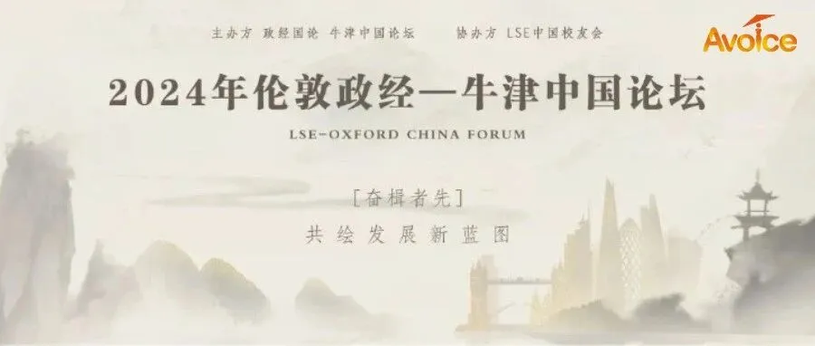
以下文章来源于政经国论 ，作者政经国论
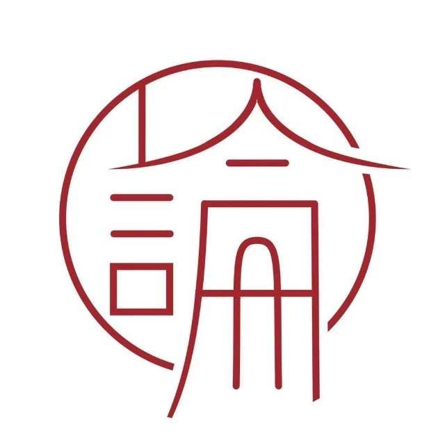
伦敦政治经济学院中国校友论坛。最前沿的话题，最犀利的时评，最精彩的碰撞，期待你的关注！

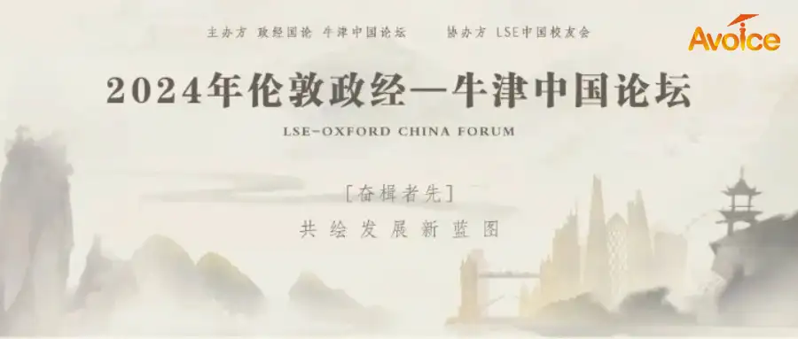

2024 伦敦政经-牛津中国论坛
奋楫者先：共绘发展新蓝图
9.6 / 9.7
上海金普顿前滩酒店
· 目录 ·
一、论坛简介
二、论坛日程
三、分论坛
四、酒会
五、部分嘉宾
六、往届嘉宾
七、会务信息
论坛简介
Introduction of LOCF
伦敦政经-牛津中国论坛由政经国论和牛津中国论坛于2020年携手创办，已走过五年春秋。
本论坛希望聚集群英，打破知识壁垒，为参与者们打造自由、包容、开放、平等的交流讨论环境，汇集不同观点，从不同角度回顾与展望中国的发展历程，忆往昔、看今朝、展未来、以世界视野看中华事。
农历2024年不仅是60年一遇的甲辰年，也是一个“全球超级大选年”。在这一特殊的年份，中国如何在复杂多变的国际舞台上把握机遇，开辟新的发展路径，是我们共同关注的话题。
今年我们和各位来宾一起从“新质生产力”、“粮食升级与持续发展安全”和“文化”三个专题展开探讨中国未来的发展方向，从多元化的视角开辟更加光明的前景。
全球政治经济环境如弈棋，时局翻覆似波澜。伦敦政经中国论坛作为海外高校校友运营的最具影响力的论坛之一，望以“舟楫之利济不通”，载各界来宾与世界顶级学者及政商界领袖交流，汲取智慧并“致远以利天下”，共同绘制中国可持续发展的新蓝图。
“百舸争流，奋楫者先”，欢迎各位奋楫者共襄盛举。
论坛日程
Schedule
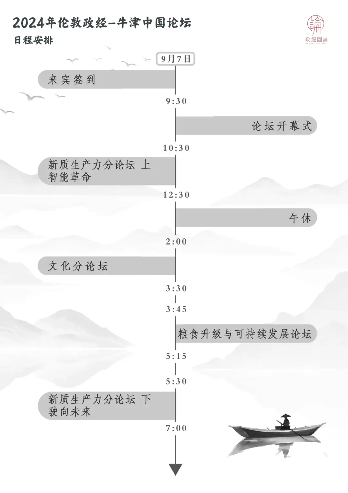
分论坛
Introduction of Panels
01
新质生产力分论坛
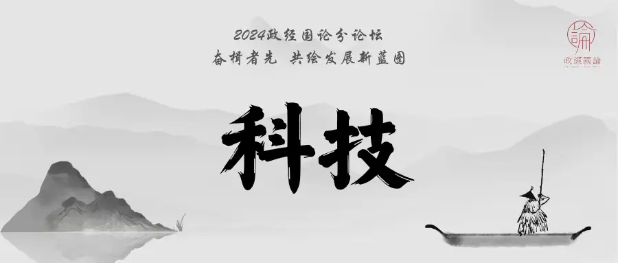
驶向未来
随着近年来智能电动汽车陆续在国内市场推出，消费者切身体会到了驾驶体验的提升，智能化成为新能源汽车发展的新趋势。然而机遇与挑战并存，面临市场增长放缓、盈利遥遥无期的现实，电动汽车应如何破局？面对西方国家反补贴调查的威胁，中国车企应如何在地缘政治的乱流中求生？人工智能引领的变革时代中，自动驾驶技术如何帮助建设智慧城市，又该如何适应伦理道德、法律法规和消费者心理的发展变化？
智能革命
在人工智能迅猛发展的时代，科技不仅改变了我们的生活方式，也激发了无限的创意和想象。加入我们，探索AI如何从理论研究走向广泛应用。在这个独特的论坛中，来自不同领域的专家将齐聚一堂，通过跨界对话， 我们将共同探讨AI的未来，从伦理道德到商业应用，从文化创作到社会治理，激发新的思考与合作机会。在这个论坛中，我们不仅探讨技术的进步，更关注技术对社会结构、文化创作以及人类未来生活方式的深刻影响。
02
粮食升级与持续发展安全分论坛
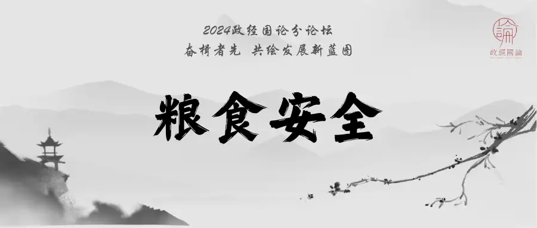
“洪范八政，食为政首”，粮食不仅是人民基本生存所需要的基础，更是维护社会和谐稳定、国家长治久安的保障。当前，国际政治纷争和军事冲突多点爆发，全球发展和安全形势错综复杂。在逆全球化思潮抬头，单边主义、保护主义明显上升的背景下，我们如何牢牢端稳“饭碗”，应对世界变革;如何配置农业、工业资源，调控粮食自产与进口量，保障食物有效供给以及需求?
与此同时，气候变化为粮食的稳定供给增加了不确定性。气温升高、降水模式变化、极端天气事件的增加，都对粮食生产提出了新的挑战和要求。农业生产应该如何适应这些变化以实现可持续的供应?基因编辑技术与抗逆品种的培育是否值得信赖?智能灌溉与水资源使用现状如何?气候变化下我们应该寻求怎样的农业生产的模式?
在此之上，尽管挑战不断，提升人们生活水平的初心应该不改。民以食为天，饮食作为影响人们幸福指数和健康情况的重要因素，在很大程度上影响着人们的福祉。那么，对外，我们如何加强国际粮食安全合作，构建全球发展命运共同体?对内，如何调整三农政策，市场如何驱动创新，商业模式如何变革以提升食品供应链的效率和透明度，这些都是当今的话题。
03
文化分论坛
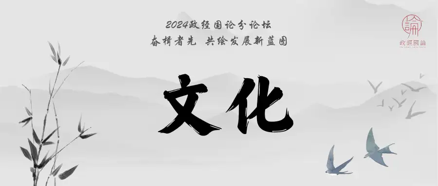
文化产业化不仅是对传统文化的传承和传播，更是将文化资源转化为经济动力的关键途径。如何将中国丰富的文化资源转化为经济动力，推动文化产业的创新与发展。本次论坛将聚焦“中华民族”更包容和多元的视角，探讨如何将传统文化产业化，如何使文化产业与科技、商业等领域相互融合，创造出更多的商业价值和社会效益。
中国是一个拥有56个不同民族，文化背景丰富，各种文化多元一体的国家。然而，国际社会对于中国的认知仍然较为片面单薄，并时常有针对中国民族地区的负面声音。那么，文化产业化是不是破除西方视角下的偏见，讲好中国故事，让传统文化走出去的有效途径?
文化产业化不仅仅是对传统文化的传承和创新，更是推动文化资源转化为经济动力。 融合艺术、商业、科技等多种元素，为文化创作者提供更多的创作空间和机会，也为社会经济带来新的增长点和活力。在保持文化独特性的同时实现经济效益，以及如何在文化传承和商业运作之间找到平衡点，成为了我们需要思考和探讨的问题。
近年来，中国青年越来越体现出“文化自信”，支持国货，各种带有传统文化和美学基因的国货品牌不断涌现。在2024政经国论文化分论坛中，提到当代中国如何破除西方视角下的偏见，讲好中国故事，让传统文化走出去。今年的文化分论坛，我们希望更进一步，探讨如何在国内外构建起“中华民族”的叙事和文化推广。传统文化如何产业化，文化产业如何与科技、商业等领域相互融合，创造出更多的商业价值和社会效益。
酒会
LOCF Cocktail Party
黑 金 梦 幻 之 夜
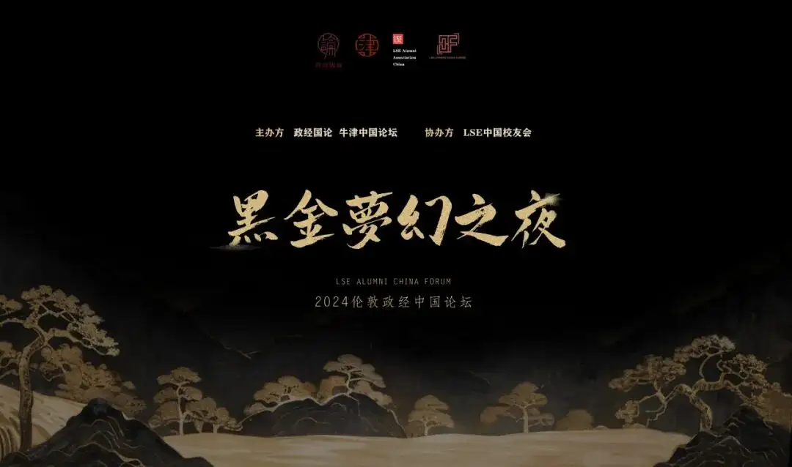
为促进嘉宾与观众之间的深入研讨，进一步开放交流，增辉思想，本届论坛前晚（9月6日）将特设酒会，诚邀重磅嘉宾与部分观众共聚上海金普顿前滩酒店屋顶酒吧，同享盛筵，共话中国。
酒会时间：2024年9月6日 19：30 - 22：00
酒会地点：上海金普顿前滩酒店 屋顶酒吧
Dress Code：为了保持酒会的优雅氛围，我们要求所有宾客严格遵守以下Dress Code：男士需穿着正式西装，女士需穿着鸡尾酒礼服。如若着装不符，我们的工作人员将谢绝入内。感谢您的配合与理解。
左右滑动查看往届酒会及本届酒会场地
本届嘉宾
This year's guests
以下为本届论坛部分嘉宾揭秘
关注“政经国论”后续推文可解锁全阵容
（按论坛顺序排序）
Larry D. Kramer
伦敦政治经济学院校长，美国艺术与科学院院士，美国哲学会会员。曾任威廉与弗洛拉·赫维特基金会主席，斯坦福法学院院长。兼任iCivics董事会主席以及多家非营利组织董事。
往届嘉宾
Previous Guests
（排序不分先后）
潘 基 文
前韩国外交部长，第8任联合国秘书长，现任国际奧林匹克道德委员会主席，博鳌亚洲论坛理事长。
徐 小 平
真格基金创始人，新东方教育科技集团的联合创始人，与俞敏洪、王强并称为新东方“三驾马车”。
陆 克 文
澳大利亚第26任、28任总理，澳大利亚工党前领袖。
马 蔚 华
原招商银行董事、行长，现任中国金融学会常务理事，吉林大学董事会董事，中国企业家协会副会长。
王 中 磊
华谊兄弟传媒股份有限公司联合创始人，副董事长兼CEO。
吴 志 强
中国工程院院士，原同济大学副校长
林 维
西南政法大学校长
王 健 儿
中国电影家协会第十一届副主席，上海电影（集团）有限公司董事长
会务信息
Information
时间 / Time
2024年9月6日 - 2024年9月7日
门票 / Tickets
酒会（9.6）
普通票价 398元
VIP票价 898元
（提供酒水饮品）
酒会可与嘉宾近距离接触，VIP更可享受在VIP Room与嘉宾单独相处的绝佳机会！
线下论坛（9.7）
普通票价 269元
VIP票价 399元
（票价均含茶歇）
论坛VIP可享受前排互动
拥有更佳的视野和观感
论坛套票：2399元
套票包含一晚上海前滩金普顿酒店住宿（含早餐）及论坛+酒会票（价值3400+）
论坛VIP套票：2999元
VIP套票包含一晚上海前滩金普顿酒店住宿（含早餐）及VIP论坛+VIP酒会票各一张（价值4000+）
VIP票、套票均为限量，
先到先得，卖完即止！
套票购票截止日期为8月15日
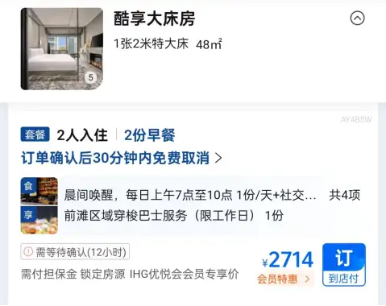
限时特惠活动
早鸟票减30元 VIP票/套票不降价
（8月8日截止）
报名方式
如同时购买酒会及论坛票请一同转账
付款时请备注姓名及微信号
微信收款码
支付宝转账
账号：15910703726
姓名：赵睿
请务必在付款完成后扫描问卷二维码
或点击文末“阅读原文”登记信息
因个人原因未填写问卷报名的，政经国论组委会保留最终解释权。
欢迎大家长按图片扫码加入
「2024LOCF官方观众群」获取更多最新信息
如有任何疑问或群聊二维码过期
请添加票务负责人或论论子咨询
主办方
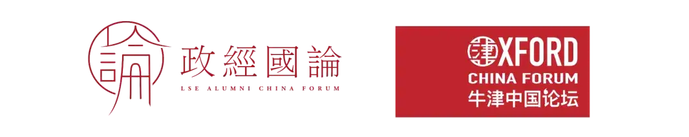
伦敦政经中国论坛于2015年创立，着眼于中国经济、社会、文化发展，力图为各界来宾提供与世界顶级学者及政商界领袖交流的机会。
牛津中国论坛成立于2013年，是全英规模最大的中国论坛，旨在为来自全英的学生学者们提供关于当代中国的多元化视角共同对变化中的中国进行深度的讨论。
协办方
合作自媒体
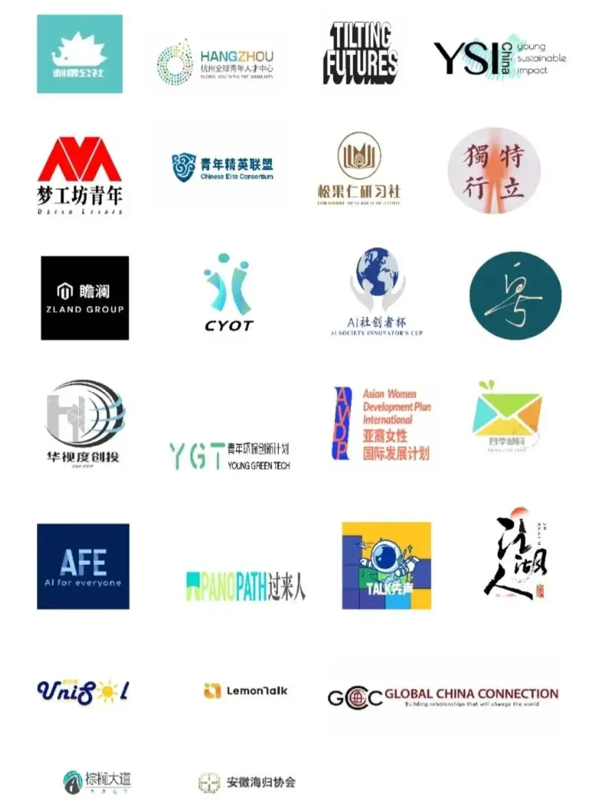
特别鸣谢（学联）
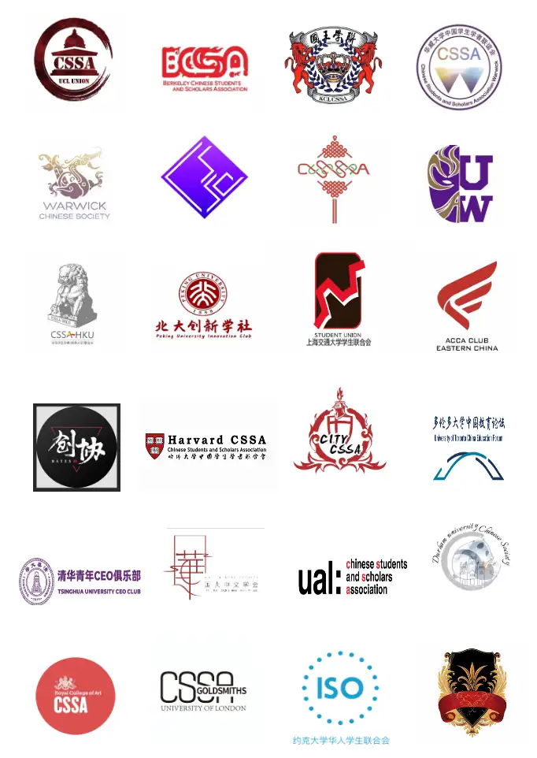
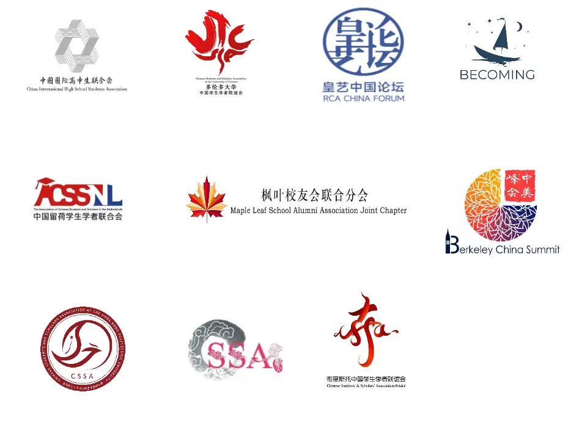
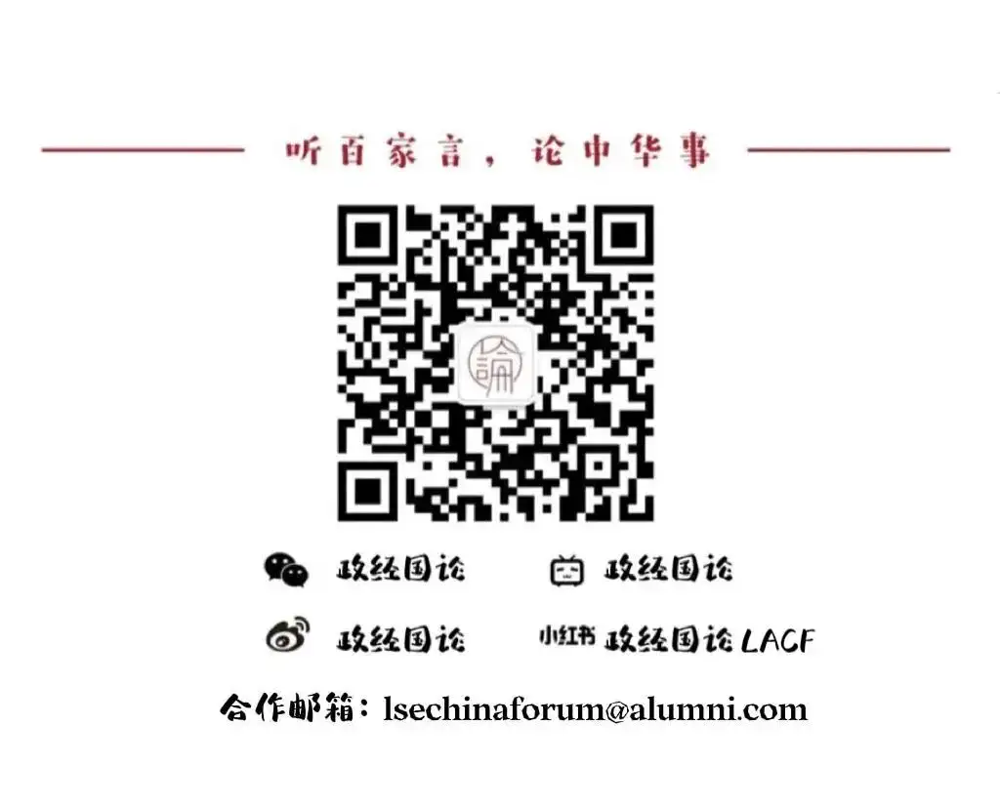
「听百家言，论中华事」
- 2024 LOCF -